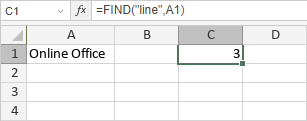

FIND/FINDB funkcija
Funkcija FIND/FINDB je jedna od funkcija za tekst i podatke. Koristi se za pronalaženje zadatog podniza (find_text) unutar niza znakova (within_text). Funkcija FIND je namenjena jezicima koji koriste jednobajtni skup znakova (SBCS), dok je FINDB namenjena jezicima koji koriste dvobajtni skup znakova (DBCS), kao što su japanski, kineski, korejski itd.
Sintaksa
FIND(find_text, within_text, [start_num])
FINDB(find_text, within_text, [start_num])
Funkcija FIND/FINDB ima sledeće argumente:
| Argument | Opis |
|---|---|
| find_text | Niz znakova koji tražite. |
| within_text | Niz znakova unutar kog se vrši pretraga. |
| start_num | Pozicija u nizu znakova od koje započinje pretraga. Ovo je opcioni argument. Ako se izostavi, funkcija će započeti pretragu od početka niza. |
Napomene
Funkcija FIND/FINDB razlikuje velika i mala slova.
Ako nema podudaranja, funkcija će vratiti grešku #VALUE!.
Kako primeniti funkciju FIND/FINDB.
Primeri
Slika ispod prikazuje rezultat koji vraća funkcija FIND.
